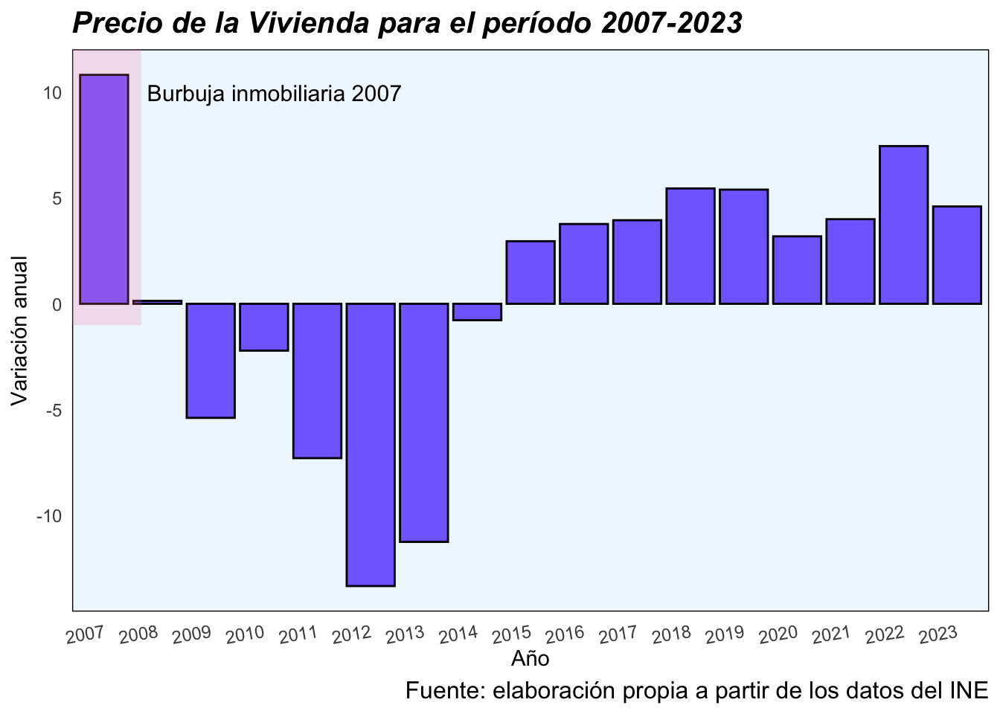
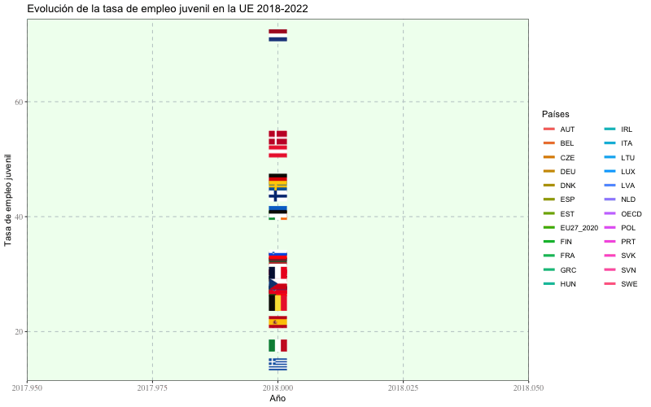
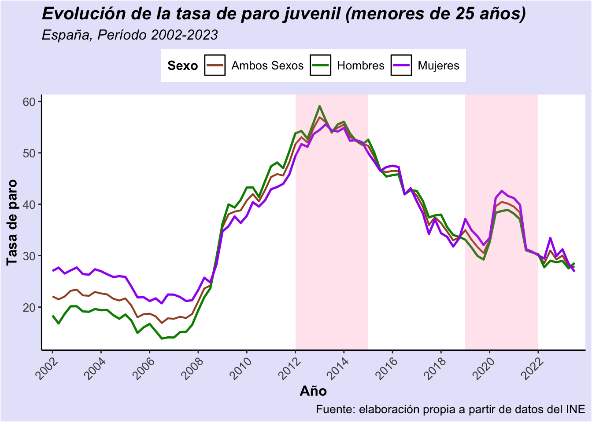
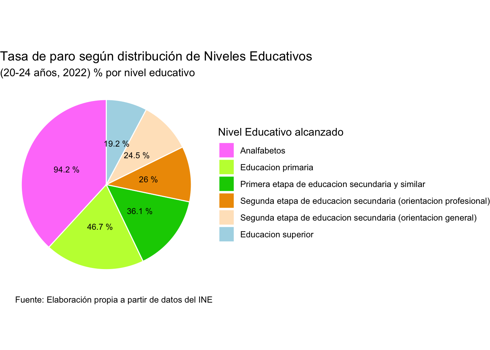
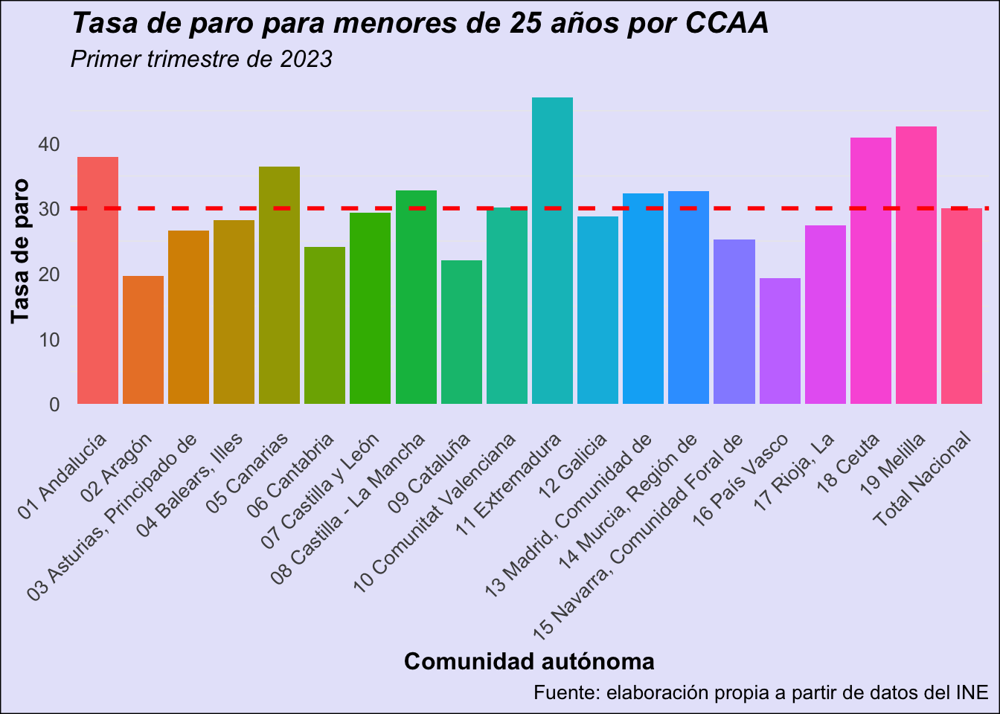
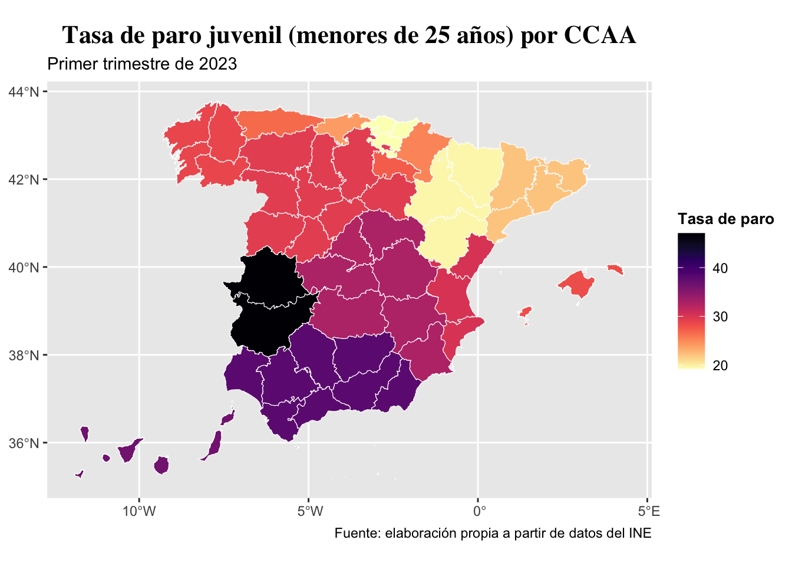
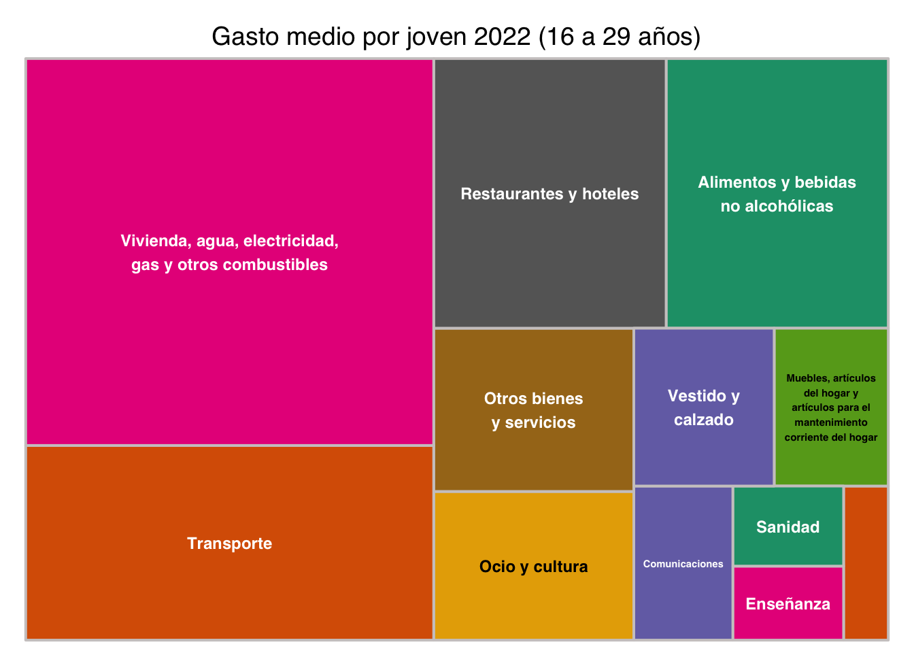

Llevaremos a cabo un análisis del panorama actual al que se enfrentan los jóvenes en España. Estudiaremos la población joven, el desempleo y empleo, el coste de la vivienda, el gasto medio y los salarios medios para dicho grupo.
trabajo BigData
Autores/as
Valentina Julieta Arnoletto (var@alumni.uv.es)
Natalia García Gómez (nagargo@alumni.uv.es)
Ana Royo Sánchez (royo3@alumni.uv.es)
Nerea Escribano Soria (esone@alumni.uv.es)
Fecha de publicación
1 de noviembre de 2023
Introducción
El trabajo que vamos a realizar se divide en cinco partes:
En primer lugar, analizaremos la población joven por sexos y su riesgo de pobreza.
En segundo lugar, analizaremos la evolución del coste de la vivienda
En tercer lugar, analizaremos la evolución de la empleabilidad y la tasa de paro juvenil
En cuarto lugar, analizaremos la evolución de los salarios medios de los jóvenes
Por último, haremos una pequeña conclusión
La intención del trabajo es analizar el panorama actual al que se enfrentan los jovenes españoles hoy en día. La elección de este tema es porque justamente somos estudiantes de 4º año de economía, nos queda un año para acabar, por lo que la idea de terminar los estudios y buscar un trabajo, de alquilar o comprarse una vivienda, o incluso independizarse es algo que nos preocupa.
Datos del trabajo
Datos usados
Los datos necesarios los obtuvimos de la base de datos del INE (Instituto Nacional de Estadística) y de la base de datos de la OCDE. Además, cargamos los datos en formato csv, lo cual nos permitió modificar los datos de forma sencilla.
Códigos
Código
# Estos son los paquetes que utilizamos:#| eval: truelibrary(rio)library(tidyverse)library(ggthemes)library(ggThemeAssist)library(dplyr)library(plotly)library(gganimate)library(gapminder)library(treemapify)library(treemap)library(patchwork)library(zoo)library(scales)library(vembedr)library(ggimage)library(countrycode)library(tidyr)library(gt)library(hrbrthemes)library(countrycode)library(ggimage)library(sf)library(rnaturalearth)library(rnaturalearthdata)library(mapdata)library(maps)library(ggrepel)library(tmap)library(gridExtra)library(glue)library(sjPlot)library(devtools)library(gclus)library(corrplot)library(knitr)library(kableExtra)library(viridis)library(magick)# Cargamos todos los datos que utilizaremos a lo largo del trabajo:archivo_de_destino <- here::here("datos", "pob_mujeres.csv")df_pob_mujeres <- rio::import(archivo_de_destino)archivo_de_destino <- here::here("datos", "pob_hombres.csv")df_pob_hombres <- rio::import(archivo_de_destino)archivo_de_destino <- here::here("datos", "ratio_de_pobreza.csv")df_ratio_pobreza <- rio::import(archivo_de_destino)archivo_de_destino <- here::here("datos", "precio_vivienda.csv")df_precio_vivienda <- rio::import(archivo_de_destino)archivo_de_destino <- here::here("datos", "tasa_paro.csv")df_tasa_paro <- rio::import(archivo_de_destino)archivo_de_destino <- here::here("datos", "tasa_paro_formacion.csv")df_paro_formacion <- rio::import(archivo_de_destino)archivo_de_destino <- here::here("datos", "tasa_paro_paises.csv")df_tasa_paro_paises <- rio::import(archivo_de_destino)archivo_de_destino <- here::here("datos", "salario_medio_grupo_edad.csv")df_salario_medio_edad <- rio::import(archivo_de_destino)archivo_de_destino <- here::here("datos", "salario_medio_nivel_formacion.csv")df_salario_medio_formacion <- rio::import(archivo_de_destino)archivo_de_destino <- here::here("datos", "employment_rate.csv")df_tasa_empleo <- rio::import(archivo_de_destino)archivo_de_destino <- here::here("datos", "gasto_medio.csv")df_gasto_medio <- rio::import(archivo_de_destino)
Modificamos los datos para el análisis
Para estudiar la población vamos a modificar los data frames respectivos al grupo de mujeres y al de hombres para tener finalmente en una misma tabla, por año, la población de jóvenes que corresponde y luego, se ilustrará en un gráfico los resultados.
En segundo lugar, para el ratio de riesgo de pobreza o de exclusión social en jóvenes, convertimos la variable total, que es character, en numeric y en estos valores totales sustituimos las comas de separación por puntos.
Para estudiar el precio de la vivienda vamos a filtrar el período en variación anual y agruparlos por año (calculando una media de los 4 trimestres). Pero primero debemos hacer es cambiar la columna de valores “total” de caracteres a númerica.
Para estudiar la tasa de paro en los jóvenes, primero vamos a arreglar los datos obtenidos. Comenzamos por convertir la variable “total” del data frame, que es character, en numeric y, en estos valores totales, sustituimos las comas que separan los decimales por puntos. Una vez hecho esto, ya podemos filtrar los datos que nos interesan para realizar distintos gráficos sobre la tasa de paro juvenil, los cuales veremos más adelante.
Para la tasa de paro según el nivel educativo alcanzado en la población de 20 a 24 años convertimos la variable total, que es character, en numeric y en estos valores totales sustituimos las comas de separación por puntos.
Para estudiar el salario medio por edad vamos a sintetizar las observaciones de salarios medios, teniendo en cuenta que en el data frame se encuentran las observaciones de forma trimestral, de forma que evitaremos esas duplicidades. Más tarde, seleccionaremos las variables que observaremos, dándoles forma en una tabla dinámica.
Para estudiar el salario medio según el tipo de formación adquirida, realizaremos un procedimiento parecido al del salario medio por grupo de edad. Reuniremos los datos en dos data frame, uno con los datos de salarios medios de personas con grados universitarios como nivel de educación, y por otro lado, el data frame de aquellas personas cuyo salario medio corresponde al un nivel de estudios un nivel por debajo del universitario, lo que sería la secundaria. Acto seguido combinaremos ambos data frames para después convertirlos a corto con la función pivot_wider.
Para estudiar la tasa de empleo juvenil modificamos el dataframe de la siguiente manera:
Código
df_tasa_empleo <- df_tasa_empleo %>%rename(Pais = LOCATION, Año = TIME, Valor = Value) %>%select(Pais, Año, Valor) %>%drop_na() %>%mutate(iso2 =countrycode(sourcevar = Pais, origin ="iso3c", destination ="iso2c", warn =FALSE))
Para estudiar el gasto medio por persona en 2022 (entre 16 y 29 años) modificamos el dataframe para convertir la columna de los valores a númerica y hacemos las modificaciones para poder realizar la gráfica.
Las distintas etapas a las que se suelen someter los jóvenes con el fin de tener un buen puesto de trabajo pasa primero por la facultad y finaliza dándose cuenta de la realidad, un futuro que no se esperaban, un futuro precario e incierto.
El futuro de un joven español
Trabajos precarios, sin casa propia y un futuro incierto
Muchos jóvenes al pensar en su futuro, les domina la incertidumbre. La alta tasa de paro y sobretodo en el caso juvenil, los contratos temporales, el alto coste de la vivienda y las condiciones de los empleos resultan que muchos no tengan expectativas sobre lo que les depara. Además, el 80 % se siente desasistido por el Estado y se intentan adaptar a la situación actual y los puestos que hay disponibles.
Los bajos salarios, la incertidumbre laboral y el coste de la vivienda retrasan la emancipación de los españoles hasta los 30,3 años.
Un video que refleja la situación de algunos jóvenes en España
Bueno, pero no nos agobiemos. A los jóvenes sólo les importa irse de fiesta!! 😆
La realidad es muy distinta a pensamientos de este tipo. Las nuevas generaciones de jóvenes están cada vez están más cualificadas y los jóvenes que ni estudian ni trabajan están en mínimos en el caso de muchos países, como en España.
¿Qué dicen los medios?
Tras investigar diversos medios, podemos concluir que todos demuestran una realidad pesimista y un futuro incierto para los jóvenes. Dejamos tres ejemplos:
“Los españoles están preocupados por tener tranquilidad, estabilidad económica y un hogar propio” Julia Wolny
“la edad media de emancipación de los jóvenes españoles alcanza ya los 30 años, tres años después que la media europea” Informe Age of young people leaving their parental household (Eurostat)
“Los jóvenes son la gran asignatura pendiente desde hace décadas para los gobiernos de diferentes tendencias e ideologías” Mariano Guindal
Gráficos
En esta sección vamos a representar la evolución de las variables en distintos gráficos y tablas para analizar la situación.
1) Población de hombres y mujeres jóvenes
Vamos a graficar la evolución de la población tanto para mujeres como para hombres para el período que comprende desde el año 2007 al 2022.
Código
#- Primer gráficop1 <-ggplot(df_total_separada, aes(x = Year, y = Total_Mujeres_16a25, shape ="Mujeres")) +geom_line(color ="pink1") +geom_point(color ="hotpink") +labs(title ="Evolución de la población de mujeres jóvenes (Período 2007-2022)", shape =NULL) +theme_fivethirtyeight() +scale_shape_manual(values =c("Mujeres"=5)) # Asignamos la forma de diamante (5) a la categoría "Mujeres" p2 <-ggplot(df_total_separada, aes(x = Year, y = Total_Hombres_16a25, shape ="Hombres")) +geom_line(color ="lightblue") +geom_point(color ="blue") +labs(title ="Evolución de la población de hombres jóvenes (Período 2007-2022)",shape =NULL) +theme_fivethirtyeight() +scale_shape_manual(values =c("Hombres"=1)) # Asignamos la forma de círculo (1) a la categoría "Hombres" p_combined <-subplot(p1, p2) %>%layout(title ="Evolución de la población de hombres y mujeres jóvenes (Período 2007-2022)")plotly::ggplotly(p_combined)
En primer lugar, hemos utilizado los datos de hombres y mujeres jóvenes, considerándose jóvenes la población entre 16 y 25 años. La evolución de los jóvenes en España, en concreto de 2007 a 2022, se puede dividir entre hombres y mujeres, pero se observa el mismo patrón. En ambos casos, se observa que ha habido una considerable disminución de los jóvenes habiendo en 2007, 2276.475 mujeres y 2397.293 hombres y siendo este año el máximo de jóvenes de los años analizados con la tendencia de disminución hasta 2013 donde hay una cierta estabilidad hasta 2019 donde se observa un aumento siendo en 2022, 2047.400 mujeres y 2155.199 hombres.
Detrás de este análisis se encuentra la disminución de la natalidad en la población española, el posterior envejecimiento de la población y el aumento de la esperanza de vida que resulta que haya menos jóvenes.
En relación al envejecimiento de la población, el ratio de afiliados por pensionista ha aumentado contribuyendo al déficit de la Seguridad Social y convirtiéndose en un problema para el Estado de Bienestar y en concreto, para la sostenibilidad del sistema de pensiones. Asimismo, la presión del gasto es creciente e intensa y el número de población joven cada vez es menor y, si se añade la tasa de desempleo y el predominio de contratos temporales en este colectivo, resulta que la tasa de sustitución o de reemplazo será cada vez más baja y un gran problema que exige dar una respuesta de forma urgente.
2) Ratio de pobreza (en %) de la población joven
Código
#- Segundo gráficodf_ratio_pobreza$periodo <-as.numeric(as.character(df_ratio_pobreza$periodo))# Asignamos iconos a los génerosdf_ratio_pobreza$icono <-ifelse(df_ratio_pobreza$sexo =="Mujeres", "mujer.png", "hombre.png")# Creamos el gráfico animadop3 <-ggplot(df_ratio_pobreza, aes(x = periodo, y = total, color = sexo, linetype = sexo)) +geom_line(linewidth =1) +geom_image(aes(image = icono), size =0.05) +labs(title ="Riesgo de Pobreza en Jóvenes por Género",subtitle ="(Período 2008-2021)", x ="Años", y ="Riesgo de Pobreza en %") +scale_color_manual(values =c("Mujeres"="hotpink", "Hombres"="lightblue")) +scale_linetype_manual(values =c("Mujeres"="solid", "Hombres"="solid")) +theme_minimal() +theme(legend.position ="top", legend.title =element_blank()) +scale_x_continuous(breaks =unique(df_ratio_pobreza$periodo), labels =unique(df_ratio_pobreza$periodo)) +labs(caption ="Fuente: elaboración propia a partir de datos del INE") +theme(legend.key =element_rect(fill ="white"), legend.background =element_rect(fill ="aliceblue")) +theme(panel.grid.major =element_line(colour ="white")) +transition_reveal(periodo)p3
Considerándose la situación de riesgo de pobreza y/o exclusión social como el 60 % de la mediana de los ingresos por unidad de consumo, la carencia material severa en al menos 4 conceptos de una lista de 9 y en hogares sin empleo o con baja intensidad en el empleo, se puede analizar el riesgo de pobreza y/o exclusión social en % en los jóvenes de entre 16 y 29 años.
Así, se observa que la tendencia ha sido creciente desde 2008 siendo en este año, 21 % en el caso de los hombres y 24,7 % en el caso de las mujeres y siendo mayor en el caso de las mujeres salvo en ciertos años. En cuanto a los máximos, el máximo de la tasa en el caso masculino se percibe en 2015 con 39,1 % y el máximo de la tasa en el caso femenino en 2016 con 38,1 %. Posteriormente, de 2018 a 2021 se percibe una disminución de esta tasa por cierta reducción de algunos componentes que influyen en el resultado, pero siendo mayor que en el periodo anterior a 2011.
Un concepto interesante es la prolongación de la etapa de juventud debido a ciertos factores como el retraso en la salida del hogar familiar por la subida del precio de la vivienda y las dificultades para acceder a ella como se va a analizar posteriormente, el aumento de la realización de estudios superiores, el retraso en la incorporación al mercado laboral y el desigual reparto de las rentas entre generaciones. Esto ha llevado a la generación de más desigualdad y precariedad laboral e inestabilidad que hace que el riesgo de pobreza sea mayor, aunque cabe decir que esto cambia según el nivel educativo y situación de cada individuo pero las estructuras de apoyo a los jóvenes son necesarias.
3) Precio de la vivienda
Código
#- Tercer gráficop4 <-ggplot(df_precio_vivienda, aes(x =as.factor(year), y = media)) +geom_bar(stat ="identity", fill ="slateblue1", color ="black") +labs(title ="Precio de la Vivienda para el período 2007-2023",x ="Año",y ="Variación anual") +theme_minimal() +theme(axis.text.x =element_text(angle =45, hjust =1)) +annotate("rect", xmin =0.4, xmax =1.7,ymin =-1, ymax =Inf, alpha =0.2, fill ="palevioletred1") +annotate(geom ="text", x =4.2, y =10, label ="Burbuja inmobiliaria 2007", size =4) +theme(plot.caption =element_text(size =12,colour ="black"), panel.grid.major =element_line(linetype ="blank"),panel.grid.minor =element_line(linetype ="blank"),axis.title =element_text(vjust =0),axis.text =element_text(size =9, hjust =0),axis.text.x =element_text(size =9,vjust =0.75, angle =10), axis.text.y =element_text(size =9),plot.title =element_text(size =15,face ="bold.italic"), panel.background =element_rect(fill ="aliceblue",linetype ="solid"), plot.background =element_rect(colour =NA)) +labs(caption ="Fuente: elaboración propia a partir de los datos del INE")p4

Con respecto al precio de la vivienda en España, desde el año 2007 al 2023, podemos distinguir distintos periodos.
En primer lugar, resaltamos el año 2007 en el que se produjo una burbuja inmobiliaria, por lo que en dicho año, el mercado de la vivienda española experimentó la mayor variación anual positiva de la historia. No obstante, en el 2008 el estallido de la crisis financiera tuvo como consecuencia una brusca caída en el precio de la vivienda. En los años siguientes, el apoyo del gobierno y las medidas de estabilización económica aportaron a la recuperación de forma gradual, por lo que el precio continuó disminuyendo año a año.
Desde el año 2015, la variación anual en el precio se mantuvo positiva e incrementando de forma sostenida año a año. La pandemia de la Covid-19 (2020) generó incertidumbre en el sector inmobiliario, pero sin embargo, estimuló de cierto modo la demanda de viviendas más espaciosas por las medidas de confinamiento. En la actualidad, dicho fenómeno de incremento en precios se observa especialmente en las áreas urbanas y turísticas, generando preocupación por la posibilidad de que se produzca una nueva burbuja.
El impacto sobre el grupo de población joven es preocupante, tanto a nivel económico como social. Es importante destacar las dificultades para acceder a la compra de la primer vivienda, por lo que los jóvenes optan, en la mayoría de los casos, por el alquiler de vivienda. Asimismo, el pequeño grupo que opta por comprar su primer vivienda se suele enfrentar a un considerable endeudamiento como consecuencia del creciente coste de la hipoteca.
En conjunto, el impacto se observa en el retraso de la independencia económica y financiera total de los jóvenes respecto a sus padres, sin poder abandonar sus hogares familiares una vez acabados sus estudios profesionales e insertados en el mercado laboral. Esto repercute en el sentido de que ya no es posible para dicho grupo visualizar planes en un futuro cercano que requieren de estabilidad económica.
4) Evolución de la tasa de empleo juvenil en la Unión Europea
Código
#- Cuarto gráficoaa <- df_tasa_empleo %>%ggplot(aes(x = Año, y = Valor)) +labs(title ="Evolución de la tasa de empleo juvenil en la UE 2018-2022",x ="Año",y ="Tasa de empleo juvenil",color ="Países") +geom_flag(aes(image = iso2)) +geom_line(aes(color = Pais), size=1.5) +theme(plot.title =element_text(size =15, face ="bold",hjust =0.5),axis.title.x =element_text(size =15, hjust =1,vjust =0),axis.title.y =element_text(size =15, hjust =1, vjust =1),legend.title =element_text(face ="bold")) +transition_reveal(Año) +view_follow() +theme_bw() +theme(panel.grid.major =element_line(colour ="azure3",linetype ="dashed"), panel.background =element_rect(fill ="honeydew")) +theme(panel.grid.minor =element_line(linetype ="blank"),axis.text =element_text(family ="serif",size =10, colour ="snow4"))animate(aa, width =800, height =500)

Como se puede observar en el gráfico, la situación de España es crítica. Se encuentra en la antepenúltima posición en relación al resto de países de la Unión Europea en términos de tasa de empleo juvenil (para la población de entre 15 y 24 años).
De forma análoga, los Países Bajos lideran al grupo en términos de tasa de empleo juvenil, siendo dicha tasa de alrededor del 70 y 80 % para el periodo considerado.
5) Evolución de la tasa de paro juvenil en España
Código
#- Quinto gráficop5 <-ggplot(df_tasa_paro_jovenes, aes(x = periodo, y = total, color ="Ambos Sexos")) +geom_line(size =0.75) +labs(title ="Evolución de la tasa de paro juvenil (menores de 25 años)",subtitle ="España, Período 2002-2023",x ="Año",y ="Tasa de paro") +theme_classic() +scale_x_yearqtr(format ="%Y", n =10, expand =c(0.02, 0.02)) +theme(axis.text.x =element_text(angle =45, hjust =1)) +geom_line(data = df_tasa_paro_hombres, aes(x = periodo, y = total, color ="Hombres"), size =0.9) +geom_line(data = df_tasa_paro_mujeres, aes(x = periodo, y = total, color ="Mujeres"), size =0.9) +scale_color_manual(values =c("Ambos Sexos"="sienna", "Hombres"="green4", "Mujeres"="purple"), labels =c("Ambos Sexos", "Hombres", "Mujeres")) +labs(color ="Sexo", caption ="Fuente: elaboración propia a partir de datos del INE") +theme(legend.position ="top")p5 +theme(plot.subtitle =element_text(size =12,face ="italic"), plot.caption =element_text(size =10),panel.grid.major =element_line(linetype ="blank"),axis.title =element_text(size =12,face ="bold"), axis.text =element_text(size =10),plot.title =element_text(size =15,face ="bold.italic"), legend.text =element_text(size =10),legend.title =element_text(size =11,face ="bold"), plot.background =element_rect(fill ="lavender"),legend.key =element_rect(fill ="white"),legend.background =element_rect(fill ="white"),legend.direction ="horizontal") +annotate("rect", xmin =2012, xmax =2015,ymin =-Inf, ymax =Inf, alpha =0.2, fill ="palevioletred1") +annotate("rect", xmin =2019, xmax =2022,ymin =-Inf, ymax =Inf, alpha =0.2, fill ="palevioletred1")

En el gráfico anterior, podemos observar cómo ha evolucionado la tasa de paro juvenil (menores de 25 años) en nuestro país desde el año 2002 hasta la actualidad. Hemos desglosado esta información por sexos, como se indica en la leyenda.
Destacamos dos períodos de aumento significativo de la tasa de paro juvenil, los cuales hemos resaltado con una anotación de color rosado. Estos períodos coinciden con la crisis financiera de 2008 y la pandemia del COVID-19.
El pico más alto de la tasa de paro se alcanza en el año 2013, donde la tasa para ambos sexos llega al 56.92%. En este año, la tasa para hombres es del 59.08%, mientras que la de las mujeres se sitúa en un 54.46%. A partir de 2013, observamos una tendencia a la baja, señalizando signos de recuperación económica hasta el año 2020. Sin embargo, en este punto, la tasa de paro juvenil experimenta un aumento sustancial debido a los impactos económicos de la pandemia del COVID-19.
El aumento durante la pandemia, pese a que es menos pronunciado que el observado durante la crisis financiera, también deja un notable pico en la tasa de desempleo, alcanzando su punto máximo en el tercer trimestre de 2020 con un 40.45%. En este caso, la tasa de paro para mujeres es mayor, concretamente es del 42.60%, mientras que la de los hombres es ligeramente menor, situándose en un 38.69%.
Estos datos sugieren que, a pesar del significativo impacto del COVID-19 en la tasa de paro juvenil, la recuperación ha sido más rápida en comparación con la crisis financiera anterior. Es fundamental considerar el contexto económico y social al interpretar estos resultados, ya que factores como las políticas gubernamentales y la rapidez de la vacunación pueden influir en la dinámica del empleo juvenil.
6) Tasa de paro para los jóvenes de 20 a 24 años según el nivel de formación, para el año 2022
Código
#- Sexto gráficop6 <-ggplot(df_paro_formacion, aes(x ="", y = total, fill =reorder(nivel_de_formacion_alcanzado, -total))) +geom_bar(stat ="identity", width =1, color ="white") +coord_polar(theta ="y") +theme_void() +scale_fill_manual(values =c("orchid1", "olivedrab1", "green3", "orange2", "bisque1", "lightblue"), name ="Nivel Educativo alcanzado") +geom_text(aes(label =paste(total, "%")), position =position_stack(vjust =0.5), color ="black", size =3) +labs(title ="Tasa de paro según distribución de Niveles Educativos ",subtitle ="(20-24 años, 2022) % por nivel educativo", caption ="Fuente: Elaboración propia a partir de datos del INE") p6

Se ha realizado un gráfico de tarta sobre la tasa de paro solo para la población de 20 a 24 años de España con los datos de 2022 y en cada grupo de formación, se representa la tasa de paro en porcentaje que supone esta situación para estos jóvenes. No se trata de una división por grupos, sino de la tasa de paro que supone estar en uno de estos grupos educativos.
Así, se puede percibir que conforme aumenta la educación obtenida, la tasa de paro disminuye siendo el mayor porcentaje en el grupo de analfabetos 94,2 % y el menor porcentaje en el grupo de educación superior (posteriores a la enseñanza secundaria) como es el caso de la universidad 19,2 %. Siguiéndole la segunda etapa de secundaria de orientación general 24,5 % y orientación profesional 26 %, pero siendo menor en el primer caso. Por lo que en principio, la empleabilidad aumenta cuanto mayor es el nivel formativo surgiendo diferencias entre grupos, pero hay que tener en cuenta que también sufren variaciones los porcentajes según los grupos de edad.
Pero cabe destacar que siguen siendo % de tasa de paro bastante altos en comparación a otros países como se va a analizar.
7) Tasa de paro juvenil por CCAA en 2023
Código
#- Séptimo gráficop7 <-ggplot(df_tasa_paro_2023, aes(x = CCAA, y = total, fill = CCAA)) +geom_bar(stat ="identity") +geom_hline(yintercept = total_nacional_2023, linetype ="dashed", color ="red", size =1) +labs(title ="Tasa de paro para menores de 25 años por CCAA",subtitle ="Primer trimestre de 2023",x ="Comunidad autónoma",y ="Tasa de paro",caption ="Fuente: elaboración propia a partir de datos del INE") +theme_minimal() +theme(axis.text.x =element_text(angle =45, hjust =1)) +theme(legend.position ="none")p7 +theme(plot.subtitle =element_text(size =12,face ="italic"), plot.caption =element_text(size =10),panel.grid.major =element_line(linetype ="blank"),axis.title =element_text(size =12,face ="bold"), axis.text =element_text(size =10),plot.title =element_text(size =15,face ="bold.italic"), legend.text =element_text(size =10),legend.title =element_text(size =11,face ="bold"), plot.background =element_rect(fill ="lavender"),legend.key =element_rect(fill ="white"),legend.background =element_rect(fill ="white"))

El gráfico de barras muestra claramente las disparidades en las tasas de desempleo juvenil (menores de 25 años) entre las comunidades autónomas de España. La línea horizontal que representa el valor del Total Nacional sirve como referencia para distinguir entre las regiones con tasas de paro superiores e inferiores.
Las comunidades autónomas que se destacan con tasas de desempleo juvenil por encima del Total Nacional son Extremadura, Andalucía, Canarias, y las ciudades autónomas de Ceuta y Melilla. Estas regiones enfrentan desafíos particulares en el ámbito laboral, posiblemente relacionados con factores económicos, demográficos o estructurales específicos de cada área.
En el otro extremo, aquellas comunidades autónomas que registran las tasas de desempleo más bajas son el País Vasco, Cantabria, Aragón y Cataluña. Estas regiones parecen disfrutar de condiciones más favorables para la empleabilidad juvenil, lo que podría vincularse a una mayor diversificación económica, inversiones en educación y la presencia de sectores laborales más robustos.
8) Mapa de la tasa de paro por CCAA en 2023
Código
df_geo <- pjpv.curso.R.2022::LAU2_prov_2020_canariasdf_geo_ccaa <- df_geo %>%select(ine_ccaa, ine_ccaa.n)df_tasa_paro_mapa <- df_tasa_paro %>%filter(edad =="Menores de 25 años") %>%filter(sexo =="Ambos sexos") %>%filter(periodo =="2023 Q1") %>% tidyr:::separate.data.frame(., CCAA, into =c("ine_ccaa", "CCAA"), sep =" ")df_mapa <-left_join(df_geo_ccaa, df_tasa_paro_mapa, by =c("ine_ccaa"="ine_ccaa"))p <-ggplot() +geom_sf(data = df_mapa, aes(geometry = geometry, fill = total), color ="white", size =0.09) +geom_sf() +scale_fill_viridis(option="magma", direction =-1) +labs(title ="Tasa de paro juvenil (menores de 25 años) por CCAA",subtitle ="Primer trimestre de 2023",caption ="Fuente: elaboración propia a partir de datos del INE",fill ="Tasa de paro") +theme(plot.title = element_text (family ="Times", size =16, hjust =0.5, color ="black", face ="bold"),legend.title =element_text(size =10, face ="bold", color ="black", hjust =0.5))p

En esta visualización del mapa de España podemos observar una variación de tonalidades que reflejan las diferentes tasas de desempleo juvenil (menores de 25 años) en cada región del país, ofreciendo así una perspectiva clara de las disparidades económicas y laborales dentro de España.
Al realizar una observación inicial, se aprecia que las zonas más oscuras, ubicadas en la parte inferior de la península y en las Canarias, indican una tasa de desempleo más elevada. En este contexto, Extremadura (47,03%), Andalucía (37,97%), y las Islas Canarias (36,42%) se perfilan como las Comunidades Autónomas con tasas de desempleo juvenil más pronunciadas.
Contrastando con estas cifras, las regiones del norte de España exhiben tonalidades más claras en el mapa, destacando el País Vasco (19,27%) y Aragón (19,69%) con tasas de desempleo significativamente más bajas. Estas disparidades no resultan sorprendentes, ya que la zona norte, caracterizada por una mayor industrialización, presenta indicadores económicos más favorables en aspectos como competitividad, PIB per cápita y empleo.
9) Comparación de la tasa de paro con otros países europeos
A continuación, hemos querido comparar la tasa de desempleo juvenil que presenta España en 2023 con las de otros países europeos y, para ello, hemos elaborado la siguiente tabla. Los países están ordenados según el valor de su tasa de desempleo y, ¡sorpresa! España encabeza la tabla.
Código
str(df_tasa_paro_paises)#> 'data.frame': 23 obs. of 4 variables:#> $ año : int 2023 2023 2023 2023 2023 2023 2023 2023 2023 2023 ...#> $ periodo : chr "Octubre" "Octubre" "Octubre" "Octubre" ...#> $ pais : chr "Alemania" "Austria" "Bulgaria" "Chequia" ...#> $ desempleo: chr "5,6" "10,5" "12,4" "7,1" ...df_tasa_paro_paises$desempleo <-sub(",", ".", df_tasa_paro_paises$desempleo)df_tasa_paro_paises$desempleo <-as.numeric(df_tasa_paro_paises$desempleo)df_tabla_paises <- df_tasa_paro_paises %>%select(pais, año, desempleo) %>%arrange(desc(desempleo))DT::datatable(df_tabla_paises,caption ="Tasa de desempleo juvenil (menores de 25 años) por países europeos",options =list(columnDefs =list(list(className ='dt-center', targets =0:3)),pageLength =23))
10) Tabla con los datos para los salarios medios según el grupo de edad
Si observamos la tabla, vemos como el rango de edad de los 16 a los 24 años es el grupo con menos salario medio. Durantes estas edades suelen ser mayoritariamente estudiantes por lo que sus salarios son relativamente bajos. Pero cabe destacar que en el grupo de edad siguiente que corresponde a personas de entre 25 a 34 años, sus salarios no han experimentado una gran mejora. Aquí vemos el gran problema de la gente joven que intenta incorporarse al mercado laboral y acaba teniendo peores condiciones que trabajadores con edades superiores.
11) Tabla con los datos para los salarios medios según el grupo de edad
Salarios medios según el nivel de formación
Formación
2014
2015
2016
2017
2018
2019
2020
2021
2022
Escudos
Educación superior
2403,38
2408,23
2380,45
2408,66
2455,26
2493,46
2553,23
2606,32
2647,84
Segunda etapa de educación secundaria
1654,56
1739,89
1679,5
1653,33
1697,69
1730,7
1753,21
1765,75
1798,87
Fuente: datos obtenidos del INE
En esta tabla podemos observar la importancia de seguir con nuestra formación una vez acabada la etapa de la ESO, además de bachiller. Encontramos unos 1.000 euros mensuales de diferencia en cuanto al salario de quienes no llegaron a la universidad. En un contexto de precariedad e incertidumbre sobre el mercado laboral de jóvenes es esencial seguir con la formación.
A lo largo de los años destacamos un aumentos de ambos salarios. De nuevo, el salario de personas con un grado universitario mayor al de una persona que no han pasado más allá de la educación secundaria, tanto obligatoria como voluntaria. Por lo que la importancia de tener un cierto nivel de estudios correlacionado con el salario medio es cada vez mayor. El saber nunca es suficiente para darnos una buena calidad, como suelen decir, “el saber no ocupa lugar”.
12) Gasto medio por joven 2022
Código
p8 <-treemap(df_gasto_medio,index="grupo",vSize="total",type="index",border.col=c("#CDC9C9"), palette="Dark2",title="Gasto medio por joven 2022 (16 a 29 años)",fontsize.labels =9)

El objetivo del gráfico es mostrar como se distribuye el gasto anual de los jóvenes españoles, utilizando los datos del año anterior ya que este aún no ha acabado. Vemos que el mayor gasto se realiza en:
Vivienda, agua, electricidad, gas y otros combustibles siendo este de 3988.46 €
Transporte siendo de 2007.13 €
Restaurantes y hoteles siendo de 1583.66 €
Conclusión
Concluimos que la situación es crítica para los jóvenes y que la posibilidad de independizarse de sus respectivas familias es cada vez más díficil.
Aumento de precios y de coste de vida
Reducido poder adquisitivo
Altas tasas de paro juvenil
Pocas oportunidades para adquirir experiencia
En definitiva, necesidad de estar continuamente formándonos para llegar a consiguir salir de la precariedad.
Información sobre la sesión
Abajo muestro mi entorno de trabajo y paquetes utilizados
---title: "El futuro de los jóvenes"description: | Llevaremos a cabo un análisis del panorama actual al que se enfrentan los jóvenes en España. Estudiaremos la población joven, el desempleo y empleo, el coste de la vivienda, el gasto medio y los salarios medios para dicho grupo.author: - name: Valentina Julieta Arnoletto (var@alumni.uv.es) - name: Natalia García Gómez (nagargo@alumni.uv.es) - name: Ana Royo Sánchez (royo3@alumni.uv.es) - name: Nerea Escribano Soria (esone@alumni.uv.es)date: 2023-11-01 #--categories: [trabajo BigData] #--image: "./imagenes/imagen_01.png"title-block-banner: true #- {true, false, "green","#AA0000"}title-block-banner-color: "#FFB5C5" #-"#FFFFFF" toc-depth: 3smooth-scroll: trueformat: html: backgroundcolor: "#F1F3F4" #embed-resources: true link-external-newwindow: true #css: ./assets/my_css_file.css #- CUIDADO!!!!code-tools: truecode-link: true---# IntroducciónEl trabajo que vamos a realizar se divide en cinco partes:- En primer lugar, analizaremos la población joven por sexos y su riesgo de pobreza.- En segundo lugar, analizaremos la evolución del coste de la vivienda- En tercer lugar, analizaremos la evolución de la empleabilidad y la tasa de paro juvenil- En cuarto lugar, analizaremos la evolución de los salarios medios de los jóvenes- Por último, haremos una pequeña conclusiónLa intención del trabajo es analizar el panorama actual al que se enfrentan los jovenes españoles hoy en día. La elección de este tema es porque justamente somos estudiantes de 4º año de economía, nos queda un año para acabar, por lo que la idea de terminar los estudios y buscar un trabajo, de alquilar o comprarse una vivienda, o incluso independizarse es algo que nos preocupa.# Datos del trabajo## Datos usadosLos datos necesarios los obtuvimos de la base de datos del [INE](https://www.ine.es/) (Instituto Nacional de Estadística) y de la base de datos de la [OCDE](https://data.oecd.org). Además, cargamos los datos en formato csv, lo cual nos permitió modificar los datos de forma sencilla. ## Códigos```{r}# Estos son los paquetes que utilizamos:#| eval: truelibrary(rio)library(tidyverse)library(ggthemes)library(ggThemeAssist)library(dplyr)library(plotly)library(gganimate)library(gapminder)library(treemapify)library(treemap)library(patchwork)library(zoo)library(scales)library(vembedr)library(ggimage)library(countrycode)library(tidyr)library(gt)library(hrbrthemes)library(countrycode)library(ggimage)library(sf)library(rnaturalearth)library(rnaturalearthdata)library(mapdata)library(maps)library(ggrepel)library(tmap)library(gridExtra)library(glue)library(sjPlot)library(devtools)library(gclus)library(corrplot)library(knitr)library(kableExtra)library(viridis)library(magick)# Cargamos todos los datos que utilizaremos a lo largo del trabajo:archivo_de_destino <- here::here("datos", "pob_mujeres.csv")df_pob_mujeres <- rio::import(archivo_de_destino)archivo_de_destino <- here::here("datos", "pob_hombres.csv")df_pob_hombres <- rio::import(archivo_de_destino)archivo_de_destino <- here::here("datos", "ratio_de_pobreza.csv")df_ratio_pobreza <- rio::import(archivo_de_destino)archivo_de_destino <- here::here("datos", "precio_vivienda.csv")df_precio_vivienda <- rio::import(archivo_de_destino)archivo_de_destino <- here::here("datos", "tasa_paro.csv")df_tasa_paro <- rio::import(archivo_de_destino)archivo_de_destino <- here::here("datos", "tasa_paro_formacion.csv")df_paro_formacion <- rio::import(archivo_de_destino)archivo_de_destino <- here::here("datos", "tasa_paro_paises.csv")df_tasa_paro_paises <- rio::import(archivo_de_destino)archivo_de_destino <- here::here("datos", "salario_medio_grupo_edad.csv")df_salario_medio_edad <- rio::import(archivo_de_destino)archivo_de_destino <- here::here("datos", "salario_medio_nivel_formacion.csv")df_salario_medio_formacion <- rio::import(archivo_de_destino)archivo_de_destino <- here::here("datos", "employment_rate.csv")df_tasa_empleo <- rio::import(archivo_de_destino)archivo_de_destino <- here::here("datos", "gasto_medio.csv")df_gasto_medio <- rio::import(archivo_de_destino)```## Modificamos los datos para el análisisPara estudiar la población vamos a modificar los data frames respectivos al grupo de mujeres y al de hombres para tener finalmente en una misma tabla, por año, la población de jóvenes que corresponde y luego, se ilustrará en un gráfico los resultados.```{r, message = FALSE, warning = FALSE}df_pob_mujeres <- df_pob_mujeres %>%group_by(Year) %>%summarise(Total_Mujeres_16a25 =sum(Total))df_pob_hombres <- df_pob_hombres %>%group_by(Year) %>%summarise(Total_Hombres_16a25 =sum(Total))df_total_separada <-left_join(df_pob_mujeres, df_pob_hombres)```En segundo lugar, para el ratio de riesgo de pobreza o de exclusión social en jóvenes, convertimos la variable total, que es character, en numeric y en estos valores totales sustituimos las comas de separación por puntos.```{r, message = FALSE, warning = FALSE}# Cambiar comas a puntosdf_ratio_pobreza <- janitor::clean_names(df_ratio_pobreza)names(df_ratio_pobreza)df_ratio_pobreza <- df_ratio_pobreza %>%mutate(total = stringr::str_replace(total, "," , "." ))str(df)df_ratio_pobreza <- df_ratio_pobreza %>%mutate(total =as.numeric(total)) ```Para estudiar el precio de la vivienda vamos a filtrar el período en variación anual y agruparlos por año (calculando una media de los 4 trimestres). Pero primero debemos hacer es cambiar la columna de valores "total" de caracteres a númerica. ```{r}# Cambiar comas a puntos en la columna "columna_con_comas"df_precio_vivienda <- janitor::clean_names(df_precio_vivienda)names(df_precio_vivienda)df_precio_vivienda <- df_precio_vivienda %>%mutate(total = stringr::str_replace(total, "," , "." ))df_precio_vivienda <- df_precio_vivienda %>%mutate(total =as.numeric(total)) df_precio_vivienda <- df_precio_vivienda %>%filter(variacion =="Variación anual") %>% tidyr:::separate.data.frame(., periodo, into =c("year", "trimestre"), sep ="T") %>% tidyr::drop_na()df_precio_vivienda <- df_precio_vivienda %>%group_by(year) %>%summarise(media =mean(total)) %>%ungroup()```Para estudiar la tasa de paro en los jóvenes, primero vamos a arreglar los datos obtenidos. Comenzamos por convertir la variable "total" del data frame, que es character, en numeric y, en estos valores totales, sustituimos las comas que separan los decimales por puntos. Una vez hecho esto, ya podemos filtrar los datos que nos interesan para realizar distintos gráficos sobre la tasa de paro juvenil, los cuales veremos más adelante.```{r}df_tasa_paro$total <-sub(",", ".", df_tasa_paro$total)df_tasa_paro$total <-as.numeric(df_tasa_paro$total)df_tasa_paro$periodo <-as.yearqtr(df_tasa_paro$periodo, format ="%YT%q")df_tasa_paro_jovenes <- df_tasa_paro %>%filter(edad =="Menores de 25 años") %>%filter(CCAA =="Total Nacional") %>%filter(sexo =="Ambos sexos")df_tasa_paro_hombres <- df_tasa_paro %>%filter(edad =="Menores de 25 años") %>%filter(CCAA =="Total Nacional") %>%filter(sexo =="Hombres")df_tasa_paro_mujeres <- df_tasa_paro %>%filter(edad =="Menores de 25 años") %>%filter(CCAA =="Total Nacional") %>%filter(sexo =="Mujeres")df_tasa_paro_2023 <- df_tasa_paro %>%filter(edad =="Menores de 25 años") %>%filter(sexo =="Ambos sexos") %>%filter(periodo =="2023 Q1")total_nacional_2023 <- df_tasa_paro_2023$total[df_tasa_paro_2023$CCAA =="Total Nacional"]```Para la tasa de paro según el nivel educativo alcanzado en la población de 20 a 24 años convertimos la variable total, que es character, en numeric y en estos valores totales sustituimos las comas de separación por puntos.```{r, message = FALSE, warning = FALSE}# Cambiar comas a puntos.df_paro_formacion <- janitor::clean_names(df_paro_formacion)names(df_paro_formacion)df_paro_formacion <- df_paro_formacion %>%mutate(total = stringr::str_replace(total, "," , "." ))str(df)df_paro_formacion <- df_paro_formacion %>%mutate(total =as.numeric(total)) ```Para estudiar el salario medio por edad vamos a sintetizar las observaciones de salarios medios, teniendo en cuenta que en el data frame se encuentran las observaciones de forma trimestral, de forma que evitaremos esas duplicidades. Más tarde, seleccionaremos las variables que observaremos, dándoles forma en una tabla dinámica. ```{r}df_sin_duplicados_edad <-distinct(df_salario_medio_edad)df_largo_edad <- df_sin_duplicados_edad %>%select(grupo_edad, periodo, total) %>%group_by(periodo) %>%drop_na() %>%ungroup() df_corto_edad <- df_largo_edad %>% tidyr::pivot_wider(values_from = total, names_from = periodo)```Para estudiar el salario medio según el tipo de formación adquirida, realizaremos un procedimiento parecido al del salario medio por grupo de edad. Reuniremos los datos en dos data frame, uno con los datos de salarios medios de personas con grados universitarios como nivel de educación, y por otro lado, el data frame de aquellas personas cuyo salario medio corresponde al un nivel de estudios un nivel por debajo del universitario, lo que sería la secundaria. Acto seguido combinaremos ambos data frames para después convertirlos a corto con la función pivot_wider. ```{r}df_formacion_universitarios <- df_salario_medio_formacion %>%select(formacion, periodo, total) %>%group_by(periodo) %>%filter(formacion =="Educación superior") %>%slice(1) %>%ungroup() df_formacion_instituto <- df_salario_medio_formacion %>%select(formacion, periodo, total) %>%group_by(periodo) %>%filter(formacion =="Segunda etapa de educación secundaria") %>%slice(1) %>%ungroup() df_combinado <-bind_rows(df_formacion_universitarios, df_formacion_instituto)df_estudios <- df_combinado %>% tidyr::pivot_wider(values_from = total, names_from = periodo)```Para estudiar la tasa de empleo juvenil modificamos el dataframe de la siguiente manera: ```{r}df_tasa_empleo <- df_tasa_empleo %>%rename(Pais = LOCATION, Año = TIME, Valor = Value) %>%select(Pais, Año, Valor) %>%drop_na() %>%mutate(iso2 =countrycode(sourcevar = Pais, origin ="iso3c", destination ="iso2c", warn =FALSE))```Para estudiar el gasto medio por persona en 2022 (entre 16 y 29 años) modificamos el dataframe para convertir la columna de los valores a númerica y hacemos las modificaciones para poder realizar la gráfica. ```{r}df_gasto_medio <- df_gasto_medio %>%rename(grupos ="Grupos de gasto") %>%select(grupos, Total)df_gasto_medio <- janitor::clean_names(df_gasto_medio)names(df_gasto_medio)df_gasto_medio <- df_gasto_medio %>%mutate(total = stringr::str_replace(total, "," , "." ))df_gasto_medio <- df_gasto_medio %>%mutate(total =as.numeric(total))df_gasto_medio <-separate(df_gasto_medio, grupos, into =c("codigo", "grupo"), sep =" ", extra ="merge", remove =FALSE)df_gasto_medio <- df_gasto_medio %>%select(grupo, total)``````{r}#| echo: falsefoto1 <-image_read("./imagenes/facultad.jpg")foto2 <-image_read("./imagenes/examenes.jpg")foto3 <-image_read("./imagenes/graduaciones.jpg")foto4 <-image_read("./imagenes/trabajo.jpg")etapas_jovenes <-c(foto1, foto2, foto3, foto4)image_animate(image_scale(etapas_jovenes, "700"), fps =0.5)```Las distintas etapas a las que se suelen someter los jóvenes con el fin de tener un buen puesto de trabajo pasa primero por la facultad y finaliza dándose cuenta de la realidad, un futuro que no se esperaban, un futuro precario e incierto.------------------------------------------------------------------------# El futuro de un joven españolTrabajos precarios, sin casa propia y un futuro inciertoMuchos jóvenes al pensar en su futuro, les domina la incertidumbre. La alta tasa de paro y sobretodo en el caso juvenil, los contratos temporales, el alto coste de la vivienda y las condiciones de los empleos resultan que muchos no tengan expectativas sobre lo que les depara. Además, el 80 % se siente desasistido por el Estado y se intentan adaptar a la situación actual y los puestos que hay disponibles.```{r}#| echo: falsemy_url <-"https://s1.eestatic.com/2023/08/11/invertia/economia/empleo/785931851_235307767_1706x960.jpg"```Un video que refleja la situación de algunos jóvenes en España```{r, echo = FALSE, out.width = "60%"}embed_url("https://www.youtube.com/watch?v=Id-QSZZA6i0")```------------------------------------------------------------------------Bueno, pero no nos agobiemos. A los jóvenes sólo les importa irse de fiesta!! 😆::: column-margin{fig-align="center"}:::La realidad es muy distinta a pensamientos de este tipo. Las nuevas generaciones de jóvenes están cada vez están más cualificadas y los jóvenes que ni estudian ni trabajan están en mínimos en el caso de muchos países, como en España. ------------------------------------------------------------------------# ¿Qué dicen los medios?Tras investigar diversos medios, podemos concluir que todos demuestran una realidad pesimista y un futuro incierto para los jóvenes. Dejamos tres ejemplos: > *"Los españoles están preocupados por tener tranquilidad, estabilidad económica y un hogar propio"* Julia Wolny> *"la edad media de emancipación de los jóvenes españoles alcanza ya los 30 años, tres años después que la media europea"* Informe Age of young people leaving their parental household (Eurostat)> *"Los jóvenes son la gran asignatura pendiente desde hace décadas para los gobiernos de diferentes tendencias e ideologías"* Mariano Guindal------------------------------------------------------------------------# GráficosEn esta sección vamos a representar la evolución de las variables en distintos gráficos y tablas para analizar la situación.------------------------------------------------------------------------## 1) Población de hombres y mujeres jóvenesVamos a graficar la evolución de la población tanto para mujeres como para hombres para el período que comprende desde el año 2007 al 2022.```{r}#- Primer gráficop1 <-ggplot(df_total_separada, aes(x = Year, y = Total_Mujeres_16a25, shape ="Mujeres")) +geom_line(color ="pink1") +geom_point(color ="hotpink") +labs(title ="Evolución de la población de mujeres jóvenes (Período 2007-2022)", shape =NULL) +theme_fivethirtyeight() +scale_shape_manual(values =c("Mujeres"=5)) # Asignamos la forma de diamante (5) a la categoría "Mujeres" p2 <-ggplot(df_total_separada, aes(x = Year, y = Total_Hombres_16a25, shape ="Hombres")) +geom_line(color ="lightblue") +geom_point(color ="blue") +labs(title ="Evolución de la población de hombres jóvenes (Período 2007-2022)",shape =NULL) +theme_fivethirtyeight() +scale_shape_manual(values =c("Hombres"=1)) # Asignamos la forma de círculo (1) a la categoría "Hombres" p_combined <-subplot(p1, p2) %>%layout(title ="Evolución de la población de hombres y mujeres jóvenes (Período 2007-2022)")plotly::ggplotly(p_combined)```En primer lugar, hemos utilizado los datos de **hombres y mujeres jóvenes**, considerándose jóvenes la población entre 16 y 25 años. La evolución de los jóvenes en España, en concreto de 2007 a 2022, se puede dividir entre hombres y mujeres, pero se observa el mismo patrón. **En ambos casos**, se observa que ha habido una **considerable disminución** de los jóvenes habiendo en 2007, 2276.475 mujeres y 2397.293 hombres y siendo este año el máximo de jóvenes de los años analizados con la tendencia de disminución hasta 2013 donde hay una cierta estabilidad hasta 2019 donde se observa un aumento siendo en 2022, 2047.400 mujeres y 2155.199 hombres.Detrás de este análisis se encuentra la disminución de la natalidad en la población española, el posterior envejecimiento de la población y el aumento de la esperanza de vida que resulta que haya menos jóvenes.En relación al **envejecimiento de la población**, el ratio de afiliados por pensionista ha aumentado contribuyendo al déficit de la Seguridad Social y convirtiéndose en un **problema** para el Estado de Bienestar y en concreto, **para la sostenibilidad del sistema de pensiones**. Asimismo, la presión del gasto es creciente e intensa y el número de población joven cada vez es menor y, si se añade la tasa de desempleo y el predominio de contratos temporales en este colectivo, resulta que la tasa de sustitución o de reemplazo será cada vez más baja y un gran problema que exige dar una respuesta de forma urgente.------------------------------------------------------------------------## 2) Ratio de pobreza (en %) de la población joven```{r}#- Segundo gráficodf_ratio_pobreza$periodo <-as.numeric(as.character(df_ratio_pobreza$periodo))# Asignamos iconos a los génerosdf_ratio_pobreza$icono <-ifelse(df_ratio_pobreza$sexo =="Mujeres", "mujer.png", "hombre.png")# Creamos el gráfico animadop3 <-ggplot(df_ratio_pobreza, aes(x = periodo, y = total, color = sexo, linetype = sexo)) +geom_line(linewidth =1) +geom_image(aes(image = icono), size =0.05) +labs(title ="Riesgo de Pobreza en Jóvenes por Género",subtitle ="(Período 2008-2021)", x ="Años", y ="Riesgo de Pobreza en %") +scale_color_manual(values =c("Mujeres"="hotpink", "Hombres"="lightblue")) +scale_linetype_manual(values =c("Mujeres"="solid", "Hombres"="solid")) +theme_minimal() +theme(legend.position ="top", legend.title =element_blank()) +scale_x_continuous(breaks =unique(df_ratio_pobreza$periodo), labels =unique(df_ratio_pobreza$periodo)) +labs(caption ="Fuente: elaboración propia a partir de datos del INE") +theme(legend.key =element_rect(fill ="white"), legend.background =element_rect(fill ="aliceblue")) +theme(panel.grid.major =element_line(colour ="white")) +transition_reveal(periodo)p3```Considerándose la situación de **riesgo de pobreza y/o exclusión social** como el 60 % de la mediana de los ingresos por unidad de consumo, la carencia material severa en al menos 4 conceptos de una lista de 9 y en hogares sin empleo o con baja intensidad en el empleo, se puede analizar el riesgo de pobreza y/o exclusión social en % en los jóvenes de entre 16 y 29 años.Así, se observa que la **tendencia** ha sido **creciente** desde 2008 siendo en este año, 21 % en el caso de los hombres y 24,7 % en el caso de las mujeres y siendo mayor en el caso de las mujeres salvo en ciertos años. En cuanto a los máximos, el máximo de la tasa en el caso masculino se percibe en 2015 con 39,1 % y el máximo de la tasa en el caso femenino en 2016 con 38,1 %. Posteriormente, de 2018 a 2021 se percibe una disminución de esta tasa por cierta reducción de algunos componentes que influyen en el resultado, pero siendo mayor que en el periodo anterior a 2011.Un concepto interesante es **la prolongación de la etapa de juventud** debido a ciertos factores como el retraso en la salida del hogar familiar por la subida del precio de la vivienda y las dificultades para acceder a ella como se va a analizar posteriormente, el aumento de la realización de estudios superiores, el retraso en la incorporación al mercado laboral y el desigual reparto de las rentas entre generaciones. Esto ha llevado a la generación de más desigualdad y precariedad laboral e inestabilidad que hace que el riesgo de pobreza sea mayor, aunque cabe decir que esto cambia según el nivel educativo y situación de cada individuo pero **las estructuras de apoyo a los jóvenes son necesarias**.------------------------------------------------------------------------## 3) Precio de la vivienda```{r}#- Tercer gráficop4 <-ggplot(df_precio_vivienda, aes(x =as.factor(year), y = media)) +geom_bar(stat ="identity", fill ="slateblue1", color ="black") +labs(title ="Precio de la Vivienda para el período 2007-2023",x ="Año",y ="Variación anual") +theme_minimal() +theme(axis.text.x =element_text(angle =45, hjust =1)) +annotate("rect", xmin =0.4, xmax =1.7,ymin =-1, ymax =Inf, alpha =0.2, fill ="palevioletred1") +annotate(geom ="text", x =4.2, y =10, label ="Burbuja inmobiliaria 2007", size =4) +theme(plot.caption =element_text(size =12,colour ="black"), panel.grid.major =element_line(linetype ="blank"),panel.grid.minor =element_line(linetype ="blank"),axis.title =element_text(vjust =0),axis.text =element_text(size =9, hjust =0),axis.text.x =element_text(size =9,vjust =0.75, angle =10), axis.text.y =element_text(size =9),plot.title =element_text(size =15,face ="bold.italic"), panel.background =element_rect(fill ="aliceblue",linetype ="solid"), plot.background =element_rect(colour =NA)) +labs(caption ="Fuente: elaboración propia a partir de los datos del INE")p4```Con respecto al **precio de la vivienda en España**, desde el año 2007 al 2023, podemos distinguir distintos periodos. En primer lugar, resaltamos el año 2007 en el que se produjo una **burbuja inmobiliaria**, por lo que en dicho año, el mercado de la vivienda española experimentó la mayor variación anual positiva de la historia. No obstante, en el 2008 el estallido de la **crisis financiera** tuvo como consecuencia una brusca caída en el precio de la vivienda. En los años siguientes, el apoyo del gobierno y las medidas de estabilización económica aportaron a la recuperación de forma gradual, por lo que el precio continuó disminuyendo año a año. Desde el año 2015, la variación anual en el precio se mantuvo positiva e incrementando de forma sostenida año a año. La **pandemia de la Covid-19** (2020) generó incertidumbre en el sector inmobiliario, pero sin embargo, estimuló de cierto modo la demanda de viviendas más espaciosas por las medidas de confinamiento. En la actualidad, dicho fenómeno de incremento en precios se observa especialmente en las áreas urbanas y turísticas, generando preocupación por la **posibilidad de que se produzca una nueva burbuja**. El impacto sobre el grupo de población joven es preocupante, tanto a nivel económico como social. Es importante destacar las dificultades para acceder a la compra de la primer vivienda, por lo que los jóvenes optan, en la mayoría de los casos, por el **alquiler** de vivienda. Asimismo, el pequeño grupo que opta por comprar su primer vivienda se suele enfrentar a un considerable endeudamiento como consecuencia del creciente coste de la hipoteca. En conjunto, el impacto se observa en el **retraso de la independencia** económica y financiera total de los jóvenes respecto a sus padres, sin poder abandonar sus hogares familiares una vez acabados sus estudios profesionales e insertados en el mercado laboral. Esto repercute en el sentido de que ya no es posible para dicho grupo visualizar planes en un futuro cercano que requieren de estabilidad económica. ```{r}#- Primera tablaarchivo_de_destino <- here::here("datos", "precio_vivienda.csv")df_tabla_precio <- rio::import(archivo_de_destino)df_tabla_precio <- janitor::clean_names(df_tabla_precio)names(df_tabla_precio)df_tabla_precio <- df_tabla_precio %>%mutate(total = stringr::str_replace(total, "," , "." ))df_tabla_precio <- df_tabla_precio %>%mutate(total =as.numeric(total)) df_tabla_precio <- df_tabla_precio %>% tidyr:::separate.data.frame(., periodo, into =c("year", "trimestre"), sep ="T") %>% tidyr::drop_na()df_tabla_precio <- df_tabla_precio %>%filter(variacion =="Variación anual") %>%group_by(year) %>%summarise(media =mean(total)) %>%arrange(desc(media)) %>%head(4) %>%ungroup()df_tabla_precio$media <-round(df_tabla_precio$media, 2)df_tabla_precio %>%kable(format ="html", caption ="Top 4 variación anual",align =c("c", "r")) %>%kable_styling(full_width =FALSE) %>%column_spec(1, bold =TRUE) %>%row_spec(0, bold =TRUE, color ="white", background ="#708090") %>%row_spec(which(df_tabla_precio$media >0, arr.ind =TRUE), background ="#87CEFA") %>%row_spec(which(df_tabla_precio$media <0, arr.ind =TRUE), background ="#8DB6CD") %>%column_spec(2, color ="white", background ="#5BC0DE")df_tabla_precio```------------------------------------------------------------------------## 4) Evolución de la tasa de empleo juvenil en la Unión Europea```{r}#- Cuarto gráficoaa <- df_tasa_empleo %>%ggplot(aes(x = Año, y = Valor)) +labs(title ="Evolución de la tasa de empleo juvenil en la UE 2018-2022",x ="Año",y ="Tasa de empleo juvenil",color ="Países") +geom_flag(aes(image = iso2)) +geom_line(aes(color = Pais), size=1.5) +theme(plot.title =element_text(size =15, face ="bold",hjust =0.5),axis.title.x =element_text(size =15, hjust =1,vjust =0),axis.title.y =element_text(size =15, hjust =1, vjust =1),legend.title =element_text(face ="bold")) +transition_reveal(Año) +view_follow() +theme_bw() +theme(panel.grid.major =element_line(colour ="azure3",linetype ="dashed"), panel.background =element_rect(fill ="honeydew")) +theme(panel.grid.minor =element_line(linetype ="blank"),axis.text =element_text(family ="serif",size =10, colour ="snow4"))animate(aa, width =800, height =500)```Como se puede observar en el gráfico, la situación de España es crítica. Se encuentra en la antepenúltima posición en relación al resto de países de la Unión Europea en términos de tasa de empleo juvenil (para la población de entre 15 y 24 años). De forma análoga, los Países Bajos lideran al grupo en términos de tasa de empleo juvenil, siendo dicha tasa de alrededor del 70 y 80 % para el periodo considerado. ------------------------------------------------------------------------## 5) Evolución de la tasa de paro juvenil en España```{r}#- Quinto gráficop5 <-ggplot(df_tasa_paro_jovenes, aes(x = periodo, y = total, color ="Ambos Sexos")) +geom_line(size =0.75) +labs(title ="Evolución de la tasa de paro juvenil (menores de 25 años)",subtitle ="España, Período 2002-2023",x ="Año",y ="Tasa de paro") +theme_classic() +scale_x_yearqtr(format ="%Y", n =10, expand =c(0.02, 0.02)) +theme(axis.text.x =element_text(angle =45, hjust =1)) +geom_line(data = df_tasa_paro_hombres, aes(x = periodo, y = total, color ="Hombres"), size =0.9) +geom_line(data = df_tasa_paro_mujeres, aes(x = periodo, y = total, color ="Mujeres"), size =0.9) +scale_color_manual(values =c("Ambos Sexos"="sienna", "Hombres"="green4", "Mujeres"="purple"), labels =c("Ambos Sexos", "Hombres", "Mujeres")) +labs(color ="Sexo", caption ="Fuente: elaboración propia a partir de datos del INE") +theme(legend.position ="top")p5 +theme(plot.subtitle =element_text(size =12,face ="italic"), plot.caption =element_text(size =10),panel.grid.major =element_line(linetype ="blank"),axis.title =element_text(size =12,face ="bold"), axis.text =element_text(size =10),plot.title =element_text(size =15,face ="bold.italic"), legend.text =element_text(size =10),legend.title =element_text(size =11,face ="bold"), plot.background =element_rect(fill ="lavender"),legend.key =element_rect(fill ="white"),legend.background =element_rect(fill ="white"),legend.direction ="horizontal") +annotate("rect", xmin =2012, xmax =2015,ymin =-Inf, ymax =Inf, alpha =0.2, fill ="palevioletred1") +annotate("rect", xmin =2019, xmax =2022,ymin =-Inf, ymax =Inf, alpha =0.2, fill ="palevioletred1") ```En el gráfico anterior, podemos observar cómo ha evolucionado la **tasa de paro juvenil (menores de 25 años)** en nuestro país desde el año 2002 hasta la actualidad. Hemos desglosado esta información por sexos, como se indica en la leyenda.Destacamos dos períodos de aumento significativo de la tasa de paro juvenil, los cuales hemos resaltado con una anotación de color rosado. Estos períodos coinciden con la **crisis financiera de 2008** y la **pandemia del COVID-19**.El **pico más alto** de la tasa de paro se alcanza en el **año 2013**, donde la tasa para ambos sexos llega al 56.92%. En este año, la tasa para hombres es del 59.08%, mientras que la de las mujeres se sitúa en un 54.46%. A partir de 2013, observamos una tendencia a la baja, señalizando signos de **recuperación económica** hasta el año 2020. Sin embargo, en este punto, la tasa de paro juvenil experimenta un aumento sustancial debido a los impactos económicos de la pandemia del COVID-19.El **aumento durante la pandemia**, pese a que es menos pronunciado que el observado durante la crisis financiera, también deja un notable pico en la tasa de desempleo, alcanzando su punto máximo en el **tercer trimestre de 2020** con un 40.45%. En este caso, la tasa de paro para mujeres es mayor, concretamente es del 42.60%, mientras que la de los hombres es ligeramente menor, situándose en un 38.69%.Estos datos sugieren que, a pesar del significativo impacto del COVID-19 en la tasa de paro juvenil, la recuperación ha sido más rápida en comparación con la crisis financiera anterior. Es fundamental considerar el contexto económico y social al interpretar estos resultados, ya que factores como las políticas gubernamentales y la rapidez de la vacunación pueden influir en la dinámica del empleo juvenil.------------------------------------------------------------------------## 6) Tasa de paro para los jóvenes de 20 a 24 años según el nivel de formación, para el año 2022```{r}#- Sexto gráficop6 <-ggplot(df_paro_formacion, aes(x ="", y = total, fill =reorder(nivel_de_formacion_alcanzado, -total))) +geom_bar(stat ="identity", width =1, color ="white") +coord_polar(theta ="y") +theme_void() +scale_fill_manual(values =c("orchid1", "olivedrab1", "green3", "orange2", "bisque1", "lightblue"), name ="Nivel Educativo alcanzado") +geom_text(aes(label =paste(total, "%")), position =position_stack(vjust =0.5), color ="black", size =3) +labs(title ="Tasa de paro según distribución de Niveles Educativos ",subtitle ="(20-24 años, 2022) % por nivel educativo", caption ="Fuente: Elaboración propia a partir de datos del INE") p6```Se ha realizado un gráfico de tarta sobre la tasa de paro solo para la población de 20 a 24 años de España con los datos de 2022 y en cada grupo de formación, se representa **la tasa de paro en porcentaje** que supone esta situación para estos jóvenes. No se trata de una división por grupos, sino de la tasa de paro que supone estar en uno de estos grupos educativos. Así, se puede percibir que conforme aumenta la educación obtenida, la tasa de paro disminuye siendo el mayor porcentaje en el grupo de analfabetos 94,2 % y el menor porcentaje en el grupo de educación superior (posteriores a la enseñanza secundaria) como es el caso de la universidad 19,2 %. Siguiéndole la segunda etapa de secundaria de orientación general 24,5 % y orientación profesional 26 %, pero siendo menor en el primer caso. Por lo que en principio, la empleabilidad aumenta cuanto mayor es el nivel formativo surgiendo diferencias entre grupos, pero hay que tener en cuenta que también sufren variaciones los porcentajes según los grupos de edad.Pero cabe destacar que siguen siendo % de tasa de paro bastante altos en comparación a otros países como se va a analizar.------------------------------------------------------------------------## 7) Tasa de paro juvenil por CCAA en 2023```{r}#- Séptimo gráficop7 <-ggplot(df_tasa_paro_2023, aes(x = CCAA, y = total, fill = CCAA)) +geom_bar(stat ="identity") +geom_hline(yintercept = total_nacional_2023, linetype ="dashed", color ="red", size =1) +labs(title ="Tasa de paro para menores de 25 años por CCAA",subtitle ="Primer trimestre de 2023",x ="Comunidad autónoma",y ="Tasa de paro",caption ="Fuente: elaboración propia a partir de datos del INE") +theme_minimal() +theme(axis.text.x =element_text(angle =45, hjust =1)) +theme(legend.position ="none")p7 +theme(plot.subtitle =element_text(size =12,face ="italic"), plot.caption =element_text(size =10),panel.grid.major =element_line(linetype ="blank"),axis.title =element_text(size =12,face ="bold"), axis.text =element_text(size =10),plot.title =element_text(size =15,face ="bold.italic"), legend.text =element_text(size =10),legend.title =element_text(size =11,face ="bold"), plot.background =element_rect(fill ="lavender"),legend.key =element_rect(fill ="white"),legend.background =element_rect(fill ="white"))```El gráfico de barras muestra claramente las disparidades en las tasas de desempleo juvenil (menores de 25 años) entre las comunidades autónomas de España. La **línea horizontal** que representa el valor del **Total Nacional** sirve como referencia para distinguir entre las regiones con tasas de paro superiores e inferiores.Las comunidades autónomas que se destacan con tasas de desempleo juvenil por encima del Total Nacional son **Extremadura, Andalucía, Canarias, y las ciudades autónomas de Ceuta y Melilla**. Estas regiones enfrentan desafíos particulares en el ámbito laboral, posiblemente relacionados con factores económicos, demográficos o estructurales específicos de cada área.En el otro extremo, aquellas comunidades autónomas que registran las tasas de desempleo más bajas son el **País Vasco, Cantabria, Aragón y Cataluña**. Estas regiones parecen disfrutar de condiciones más favorables para la empleabilidad juvenil, lo que podría vincularse a una mayor diversificación económica, inversiones en educación y la presencia de sectores laborales más robustos.------------------------------------------------------------------------## 8) Mapa de la tasa de paro por CCAA en 2023```{r}df_geo <- pjpv.curso.R.2022::LAU2_prov_2020_canariasdf_geo_ccaa <- df_geo %>%select(ine_ccaa, ine_ccaa.n)df_tasa_paro_mapa <- df_tasa_paro %>%filter(edad =="Menores de 25 años") %>%filter(sexo =="Ambos sexos") %>%filter(periodo =="2023 Q1") %>% tidyr:::separate.data.frame(., CCAA, into =c("ine_ccaa", "CCAA"), sep =" ")df_mapa <-left_join(df_geo_ccaa, df_tasa_paro_mapa, by =c("ine_ccaa"="ine_ccaa"))p <-ggplot() +geom_sf(data = df_mapa, aes(geometry = geometry, fill = total), color ="white", size =0.09) +geom_sf() +scale_fill_viridis(option="magma", direction =-1) +labs(title ="Tasa de paro juvenil (menores de 25 años) por CCAA",subtitle ="Primer trimestre de 2023",caption ="Fuente: elaboración propia a partir de datos del INE",fill ="Tasa de paro") +theme(plot.title = element_text (family ="Times", size =16, hjust =0.5, color ="black", face ="bold"),legend.title =element_text(size =10, face ="bold", color ="black", hjust =0.5))p```En esta visualización del mapa de España podemos observar una variación de tonalidades que reflejan las diferentes tasas de desempleo juvenil (menores de 25 años) en cada región del país, ofreciendo así una perspectiva clara de las **disparidades económicas y laborales dentro de España**.Al realizar una observación inicial, se aprecia que las **zonas más oscuras**, ubicadas en la parte inferior de la península y en las Canarias, indican una **tasa de desempleo más elevada**. En este contexto, **Extremadura** (47,03%), **Andalucía** (37,97%), y las **Islas Canarias** (36,42%) se perfilan como las Comunidades Autónomas con tasas de desempleo juvenil más pronunciadas.Contrastando con estas cifras, las regiones del norte de España exhiben **tonalidades más claras** en el mapa, destacando el **País Vasco** (19,27%) y **Aragón** (19,69%) con **tasas de desempleo significativamente más bajas**. Estas disparidades no resultan sorprendentes, ya que la zona norte, caracterizada por una mayor industrialización, presenta indicadores económicos más favorables en aspectos como competitividad, PIB per cápita y empleo.------------------------------------------------------------------------## 9) Comparación de la tasa de paro con otros países europeosA continuación, hemos querido comparar la tasa de desempleo juvenil que presenta España en 2023 con las de otros países europeos y, para ello, hemos elaborado la siguiente tabla. Los países están ordenados según el valor de su tasa de desempleo y, ¡sorpresa! España encabeza la tabla.```{r}str(df_tasa_paro_paises)df_tasa_paro_paises$desempleo <-sub(",", ".", df_tasa_paro_paises$desempleo)df_tasa_paro_paises$desempleo <-as.numeric(df_tasa_paro_paises$desempleo)df_tabla_paises <- df_tasa_paro_paises %>%select(pais, año, desempleo) %>%arrange(desc(desempleo))DT::datatable(df_tabla_paises,caption ="Tasa de desempleo juvenil (menores de 25 años) por países europeos",options =list(columnDefs =list(list(className ='dt-center', targets =0:3)),pageLength =23))```------------------------------------------------------------------------## 10) Tabla con los datos para los salarios medios según el grupo de edad Si observamos la tabla, vemos como el rango de edad de los 16 a los 24 años es el grupo con menos salario medio. Durantes estas edades suelen ser mayoritariamente estudiantes por lo que sus salarios son relativamente bajos. Pero cabe destacar que en el grupo de edad siguiente que corresponde a personas de entre 25 a 34 años, sus salarios no han experimentado una gran mejora. Aquí vemos el gran problema de la gente joven que intenta incorporarse al mercado laboral y acaba teniendo peores condiciones que trabajadores con edades superiores. ```{r}DT::datatable(df_corto_edad, filter ='top', options =list(pageLength =2, autoWidth =TRUE))```------------------------------------------------------------------------## 11) Tabla con los datos para los salarios medios según el grupo de edad ```{r, echo = FALSE, message = FALSE, warning = FALSE, results = TRUE}archivo_de_destino <- here::here("datos", "salario_medio_nivel_formacion.csv")df_tabla_salario<- rio::import(archivo_de_destino)df_tabla_universidad <- df_tabla_salario %>%select(formacion, periodo, total) %>%group_by(periodo) %>%filter(formacion =="Educación superior") %>%slice(1) %>%ungroup() %>%rename(Formación = formacion)df_tabla_instituto <- df_tabla_salario %>%select(formacion, periodo, total) %>%group_by(periodo) %>%filter(formacion =="Segunda etapa de educación secundaria") %>%slice(1) %>%ungroup() %>%rename(Formación = formacion)df_tabla_combinado <-bind_rows(df_tabla_universidad, df_tabla_instituto)df_tabla_estudios <- df_tabla_combinado %>% tidyr::pivot_wider(values_from = total, names_from = periodo)Escudos <-c("./imagenes/logo_uv.jpg", "./imagenes/logo_sequeros.jpg")df_img <-cbind(df_tabla_estudios, Escudos) tabla <- df_img %>%gt() tabla <- tabla %>%tab_header(title =md("**Salarios medios según el nivel de formación**")) %>%tab_options(heading.background.color ="#FFD700") %>%tab_source_note("Fuente: datos obtenidos del INE") %>%tab_style(style =cell_fill(color ="lightblue"),locations =cells_body(columns ="2022")) %>%tab_style(style =cell_text(color ="red"),locations =cells_body(columns ="2022")) %>%tab_options(heading.title.font.size =15, column_labels.font.weight ="bold") %>% gt::text_transform(locations =cells_body(columns =c(Escudos)), fn =function(x){gt::local_image(x, height =80)}) %>%cols_align (align ="center")tabla ```En esta tabla podemos observar la importancia de seguir con nuestra formación una vez acabada la etapa de la ESO, además de bachiller. Encontramos unos 1.000 euros mensuales de diferencia en cuanto al salario de quienes no llegaron a la universidad. En un contexto de precariedad e incertidumbre sobre el mercado laboral de jóvenes es esencial seguir con la formación. A lo largo de los años destacamos un aumentos de ambos salarios. De nuevo, el salario de personas con un grado universitario mayor al de una persona que no han pasado más allá de la educación secundaria, tanto obligatoria como voluntaria. Por lo que la importancia de tener un cierto nivel de estudios correlacionado con el salario medio es cada vez mayor. El saber nunca es suficiente para darnos una buena calidad, como suelen decir, "el saber no ocupa lugar". ------------------------------------------------------------------------## 12) Gasto medio por joven 2022```{r}p8 <-treemap(df_gasto_medio,index="grupo",vSize="total",type="index",border.col=c("#CDC9C9"), palette="Dark2",title="Gasto medio por joven 2022 (16 a 29 años)",fontsize.labels =9)```El objetivo del gráfico es mostrar como se distribuye el gasto anual de los jóvenes españoles, utilizando los datos del año anterior ya que este aún no ha acabado. Vemos que el mayor gasto se realiza en:- *Vivienda, agua, electricidad, gas y otros combustibles* siendo este de 3988.46 €- *Transporte* siendo de 2007.13 € - *Restaurantes y hoteles* siendo de 1583.66 €------------------------------------------------------------------------<br># Conclusión Concluimos que la situación es crítica para los jóvenes y que la posibilidad de independizarse de sus respectivas familias es cada vez más díficil.- Aumento de precios y de coste de vida - Reducido poder adquisitivo - Altas tasas de paro juvenil - Pocas oportunidades para adquirir experiencia En definitiva, necesidad de estar continuamente formándonos para llegar a consiguir salir de la precariedad.<br>------------------------------------------------------------------------<br># Información sobre la sesiónAbajo muestro mi entorno de trabajo y paquetes utilizados```{r}#| echo: falsesessioninfo::session_info() %>% details::details(summary ='current session info') ```


![]()
![]()